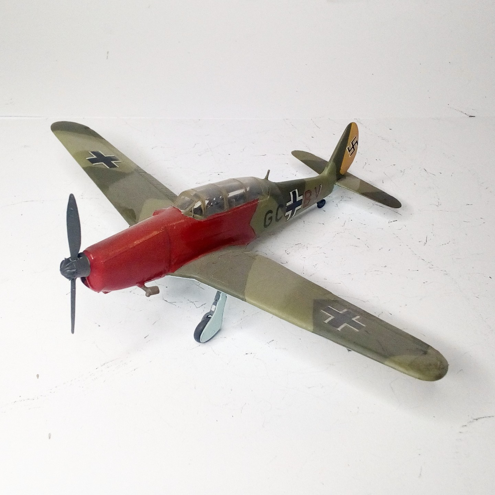
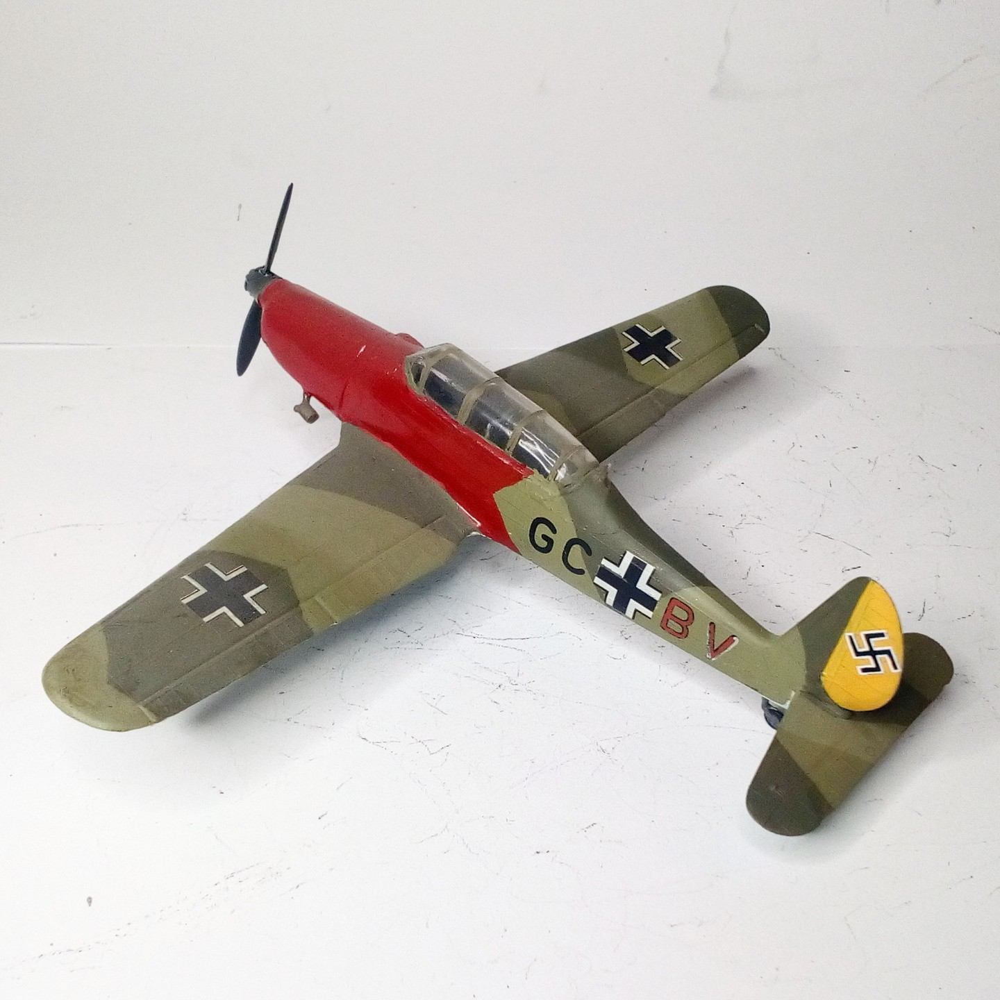

Aerei · scale model archive
Arado Ar 96
Arado Ar 96 — Kit: KOPRO, Scale: 1/72. Personal aircraft of a Geschwader Kommodore #1/72 #KOPRO #Ar96

Photo gallery

English description
Personal aircraft of a Geschwader Kommodore
#1/72 #KOPRO #Ar96
Descrizione italiana
Aereo personale di un Geschwader Kommodore. #1/72 #KOPRO #Ar96